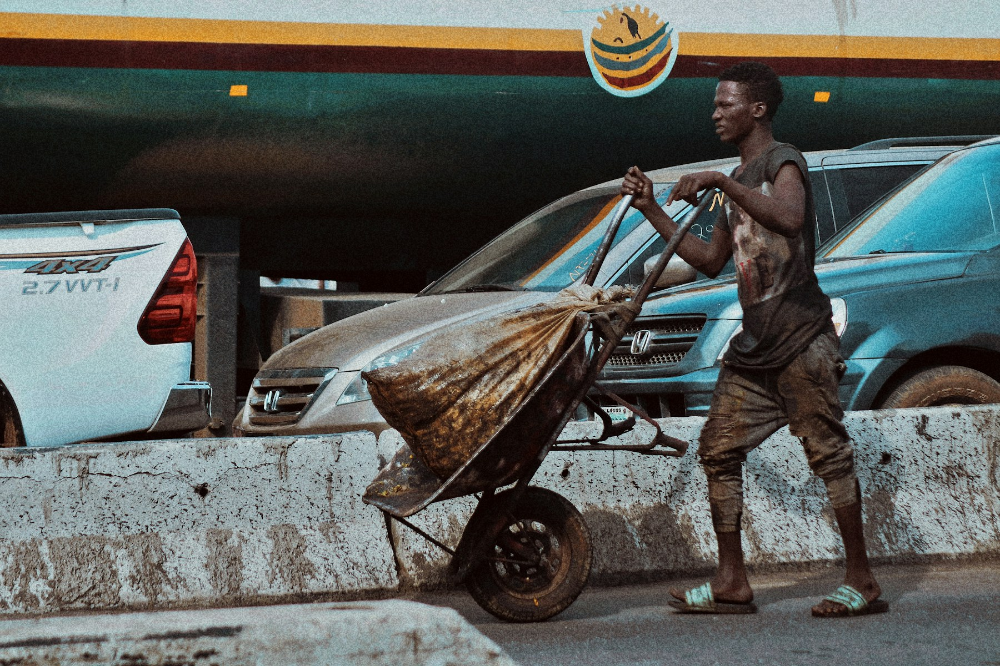
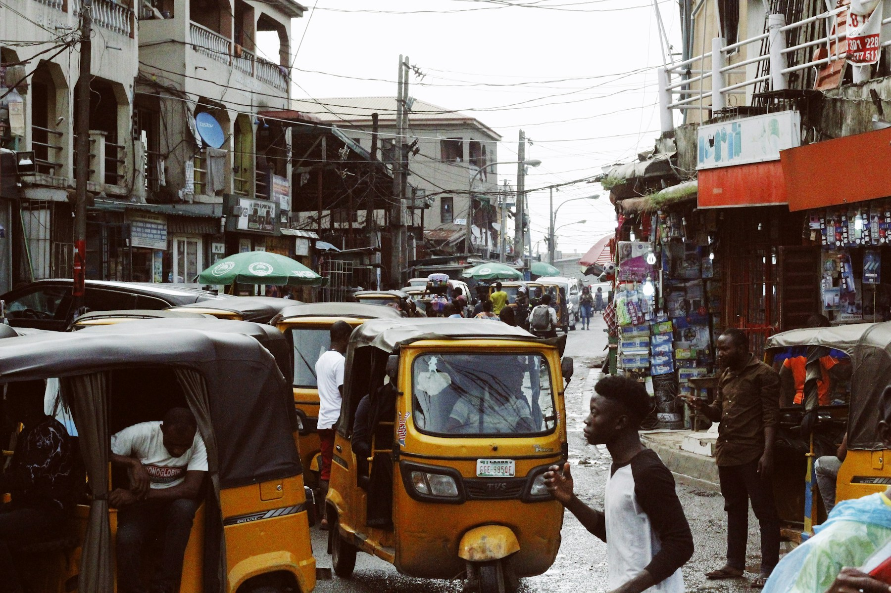
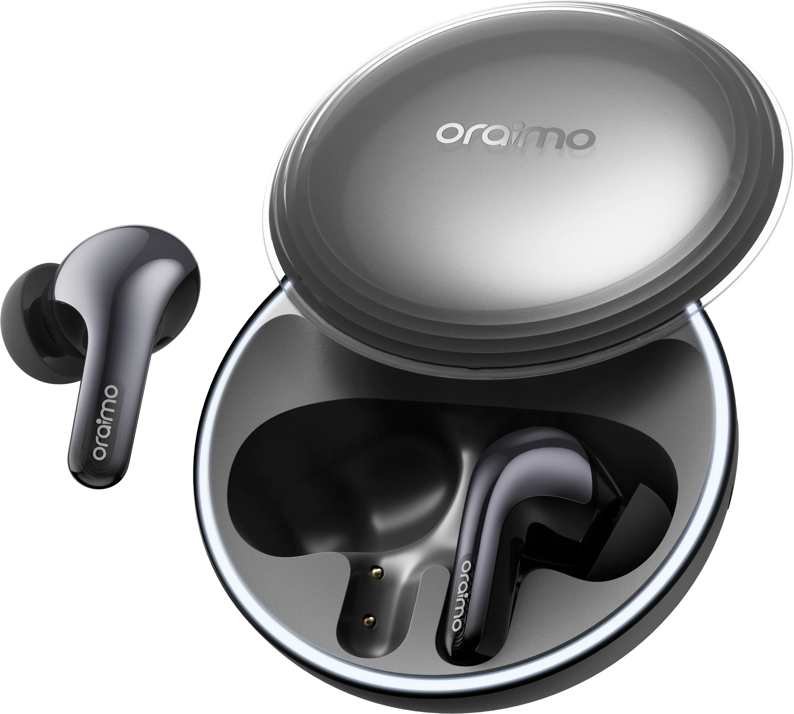

Lagos is loud.

Noise
off.
52dB
Hybrid Active
Noise Cancellation
52dB ANC
Hybrid noise cancelling
Deep low end
Big-speaker bass
Space
on.
The city keeps going.
You don't have to hear it.
SpaceBuds 2
Noise Off, Space On